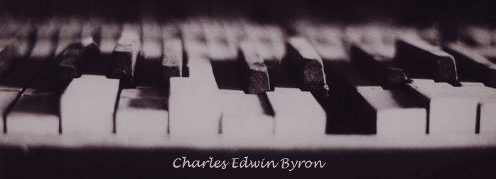

"The aim and final end of all music should be none other than the glory of God and the refreshment of the soul""El objetivo final de la música no debería ser otro que la gloria de Dios y el refresco del alma"
Johann Sebastian Bach

Bienvenidos a Byron & Son
Byron & Son es una pequeña empresa que ha sido dirigida por músicos profesionales desde 1937.
En B&S nos debemos a nuestros clientes y nos aseguramos de que encuentren el instrumento perfecto y único que están buscando.
Somos especialistas en instrumentos históricos de cuerda y de viento de madera y metal. También tenemos instrumentos de percusión y teclados a la venta.
Todos los instrumentos raros son originales y están en perfectas condiciones, ¡verdaderos objetos de coleccionista!
Somos expertos en antiguos instrumentos raros de cuerda: arpas, liras, mandolinas, arpas eolias, violines, chelos, guitarras, banjos, ukeleles...
En nuestra tienda también tenemos gran cantidad de instrumentos de origen extranjero: balalaikas (Rusia),
violines de Hardanger (Noruega), khims (Tailandia y Camboya), komungos (Korea), koras (África), kotos (Japón), nyckelharpas (Suecia), sitares (India), xalams (África Occidental)… ¡y otros nuevos todas las semanas!
Compramos y vendemos vientos de madera del Renacimiento, Barroco y épocas Clásica y Romántica (siglos XIV al XVIII): flautas (abiertas, de soplo directo y cerradas), lengüetas simples (clarinetes, basset horns) y lengüetas dobles (cornamusas, cromornos, chirimías, rauschpfeifes, oboes, fagots, gaitas, bombardas, tarogatos, cromornos).

Tenemos valiosos instrumentos de metal a la venta: buccinas, buisines, cornetos, cornetas, cuernos, sacabuches, clarines, trompetas, trombones, bazookas, eufonios, tubas y mucho más...
En Byron & Son encontrará todo lo que necesita, desde partituras, cancioneros, manuales (métodos para músicos aficionados hasta profesionales) hasta fotos y postales o cintas y discos o componentes (puentes, estuches, cuerdas, cordales, llaves, y componentes difíciles de encontrar...).
Vendemos partituras antiguas producidas a partir del siglo XVI: auténticas piezas de coleccionista con algunas de sus canciones favoritas. Venga a verlas: sería un fantástico regalo para usted o algún ser querido..


Somos uno de los distribuidores de instrumentos antiguos más expertos de América. Pase a ver nuestra colección única en una tienda que funciona desde 1937.